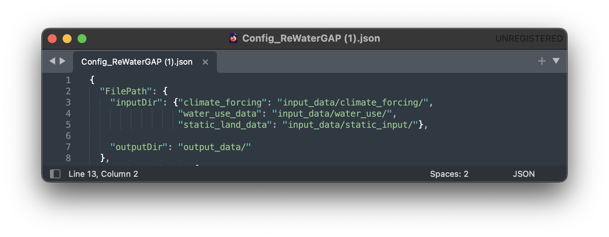
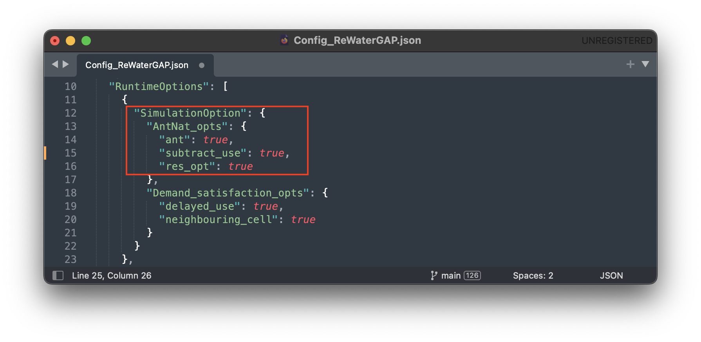
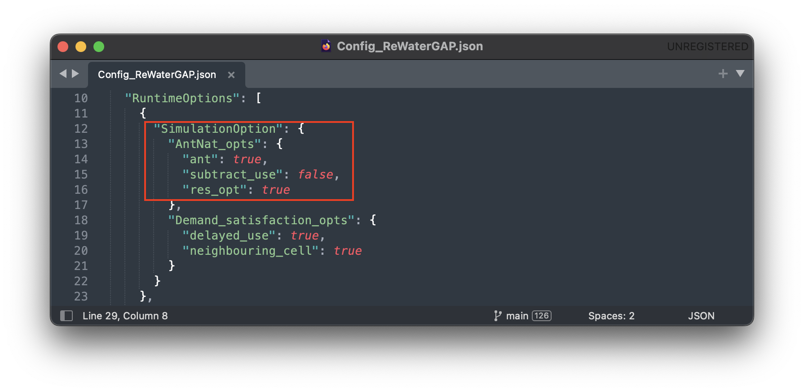
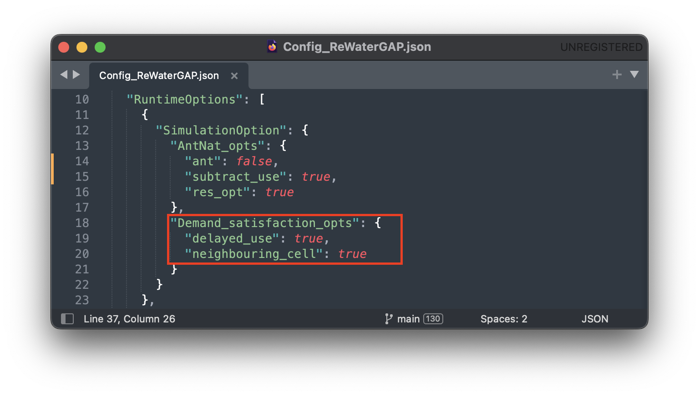
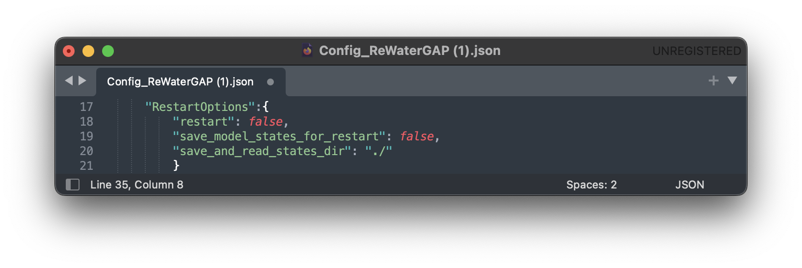
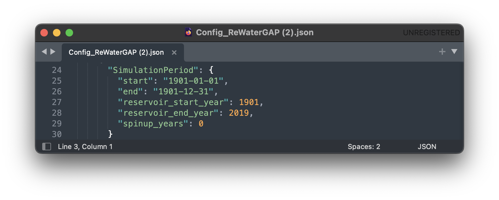
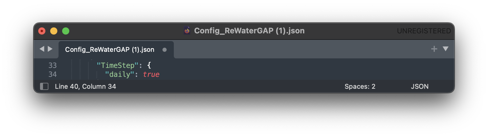
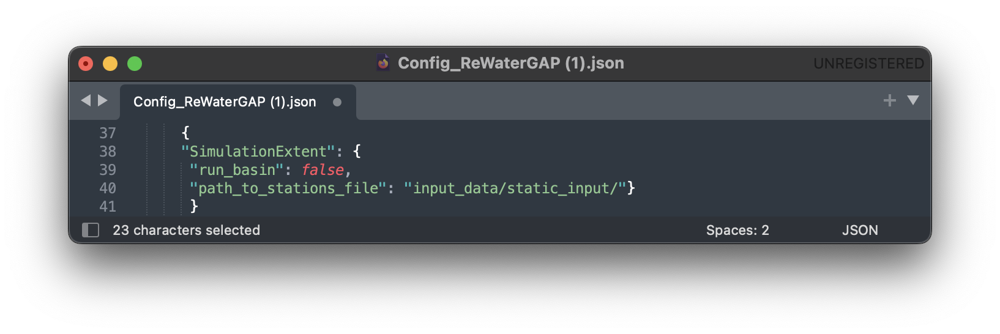
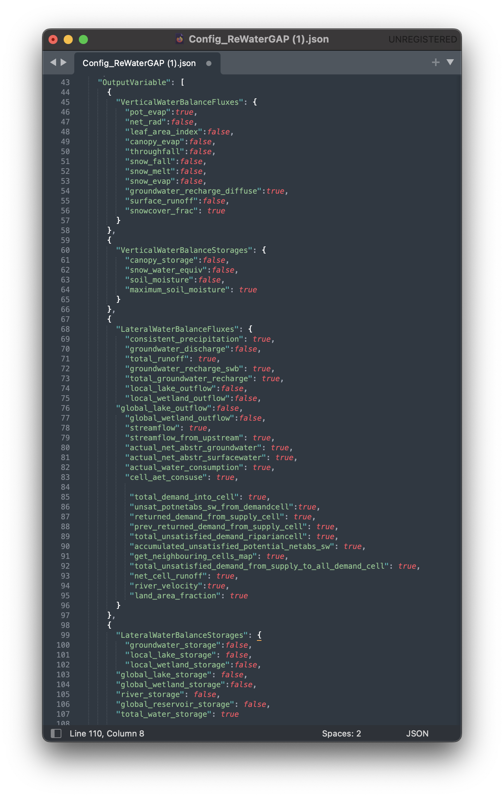

Configuration File#
Component of the configuration file#
File Path#
Users can change the path to the climate forcings, water use data and static land data required by WaterAP in NetCDF format in the “inputDir” (see image below). The path to the output data can be changed in the “outputDir”.

Note
The climate forcing directory should follow the folder structure as described in the five minute guide.
Runtime Options#
Simulation Options#

“AntNat_opts”: {“ant”: true, “subtract_use”: true, “res_opt”: true} as shown in the image above, simulates the effects of both human water use and man-made reservoirs (including their commissioning years) on flows and storages and is referred to as a standard anthropogenic run.
The following options in „AntNat_opts“ can be turned off and on to simulate:
a naturalized run (without human impact). For a tutorial on how to simulate a naturalized run, see here.

human water use only (simulation excludes reservoir impact). For a tutorial on how to run WaterGAP simulation with human water use only, see here.
reservoirs only (simulation excludes human water use). For a tutorial on how to run WaterGAP simulation with reservoirs only, see here.

- WaterGap satisfies surface water demand spatially using:
riparian water supply option which by default is always enabled and can not be disabled.
neighboring cell water supply option
- and temporally using :
delayed water supply option
The neighboring cell and delayed use water supply option can either or both be activated (set to “true”) or deactivated (set to “false”) in the “Demand_satisfaction_opts” as shown in the image below:

For more details on these water satisfaction options read net abstractions.
Restart Options#

Setting “restart” to “true” will prompt WaterGAP to restart from a previously saved state. To create a saved state, the “save_model_states_for_restart” option must be set to “true”. The directory to save saved states (storages, fluxes, etc.) can be defined in the “save_and_read_states_dir” option.
For a tutorial on how to restart WaterGAP from a saved state, see here.
Simulation Period#
Users can change the start and end dates of the simulation, the start and end operational years for reservoirs, as well as model spinup years (see image below).

Time Step#

At the moment WaterGAP simulations only use daily temporal resolution. Always leave it set to “true”.
Simulation Extent#

Setting the “run_basin” to “true” will prompt WaterGAP to run for a particular basin. By chosing a downstream grid cell, WaterGAP defines a corresponding upstream basin. To define the downstream grid cell the location of the grid cell (in degree latitude and longitude) defined in a station.csv file. The path to such file is passsed to WaterGAP using the “path_to_stations_file” (see image). An example file (stations.csv) can be found in the static_input folder [HydrologyFrankfurt/ReWaterGAP].
For a tutorial on how to run WaterGAP for a particular basin, see here.
Output Variables#

A comprehensive list of the output variables in the image above can be found in the glossary. Each output can be toggled on (set to “true”) or off (set to “false”) in the “OutputVariable” options.